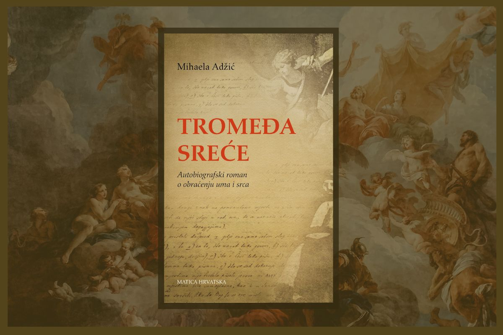
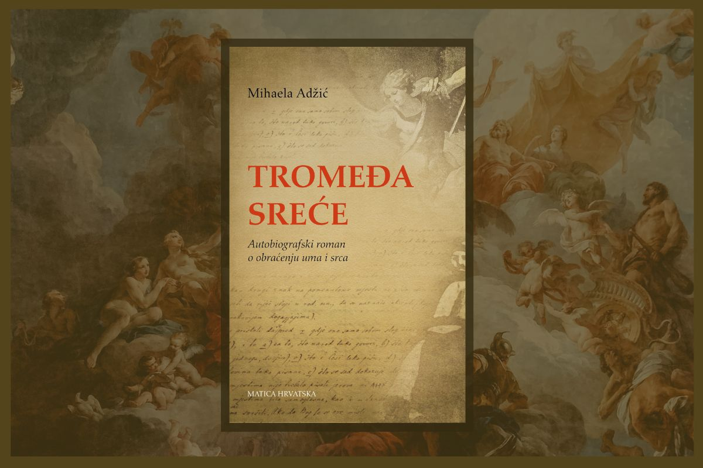

Book cover "Tromeđa sreće" by Mihaela Adžić
Book cover / Print Production
We designed the book cover for Tromeđa sreće, an autobiographical novel by Mihaela Adžić that tells a deeply personal story of the conversion of mind and heart. The book was published by Matica hrvatska and is available in one of Croatia’s largest bookstore chains, Verbum. This vivid and emotionally rich novel explores family history and the triumph of love. The cover features two important figures from the story — Saint Michael the Archangel and the author’s famous ancestor, known as “Zmaj od Bosne” — symbolizing strength, faith, and heritage.
 
